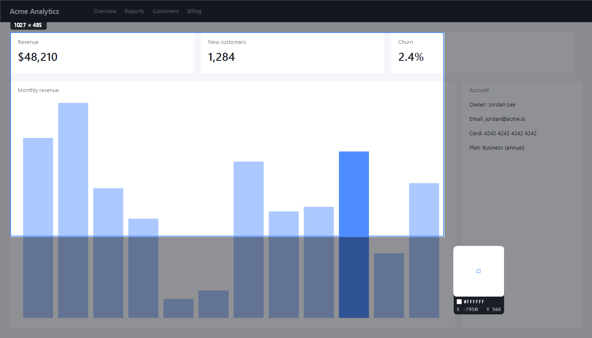
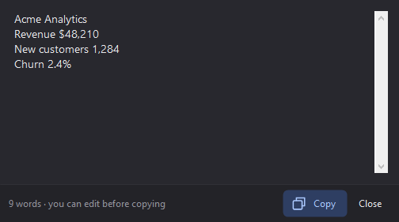

Capture
Select exactly what you need.
The screen freezes the moment you press the shortcut, so menus and tooltips stay put.
- Drag a region with a live size readout
- Hover and click to grab a window precisely
- Magnifier with pixel color and coordinates
- Arrow keys nudge the cursor one pixel at a time
- Delayed snips (3, 5 or 10 s) for menus and hover states
- Works across multiple monitors and high-DPI displays

Editor
Explain it, don't just show it.
Sixteen tools, every one a keystroke away. Annotations stay separate from the image, so you can move, resize, recolor or delete them any time.
- Arrows, shapes, pen, highlighter and numbered steps
- Text labels and speech-bubble callouts
- Blur, pixelate and spotlight
- Crop, rotate, zoom and unlimited undo

Text recognition
Copy text you can't select.
Grab text from images, videos, error dialogs and scanned documents. Recognition happens on your PC using the engine built into Windows.
- Shift+PrtSc, select an area — the text is on your clipboard
- Review and edit before copying
- Extract text from any snip in the editor with Ctrl+E

Share
Looks great anywhere you paste it.
Copy straight to the clipboard, save as PNG, JPG, BMP or GIF, pin it on screen, or add a frame and shadow in one click.